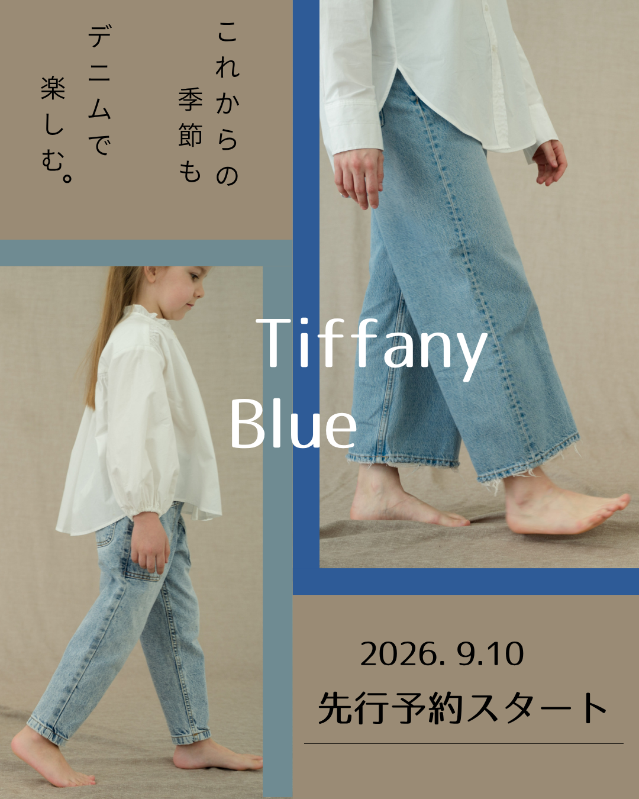

デニムパンツ バナー制作

制作目的
デニムパンツの新作・先行予約開始を告知し、 商品の魅力を伝えて予約につなげるバナーを制作しました。
ターゲット
デニムやカジュアルファッションを好む２０代～４０代の女性
を想定しています。
親子で楽しめるファッションにも関心のある方をターゲットに
しています。
デザインの工夫
大人と子どものデニムスタイルを組み合わせた写真を使用し、
デニムを日常の中で楽しむイメージを表現しました。
ベージュを基調とした落ち着いた背景に、デニムを連想させるブルーを
アクセントとして取り入れ、爽やかでナチュラルな印象に仕上げています。
また、写真を縦に配置することで動きのあるレイアウトにし、
中央の**「Tiffany Blue」**を大きく配置してブランド名が印象に残る
ようにしました。
下部には、**「2026.9.10先行予約スタート」**を目立つ位置に配置し、
重要な情報がひと目で伝わるようにしています。
制作時間
40分
使用ツール
Canva